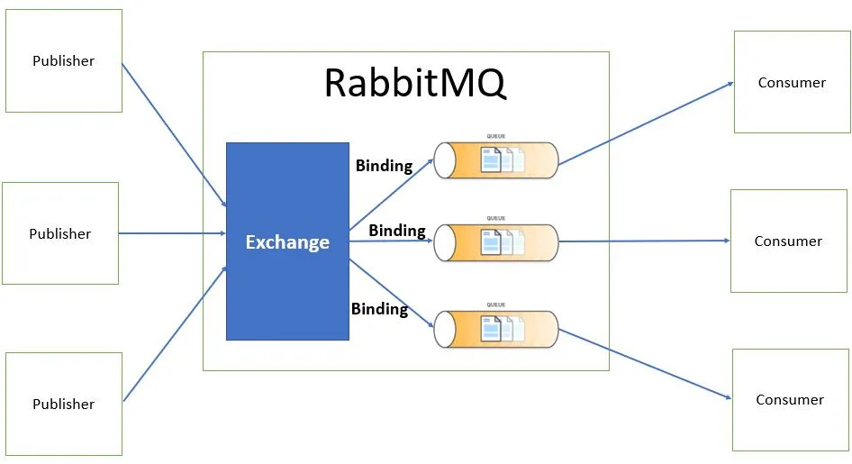
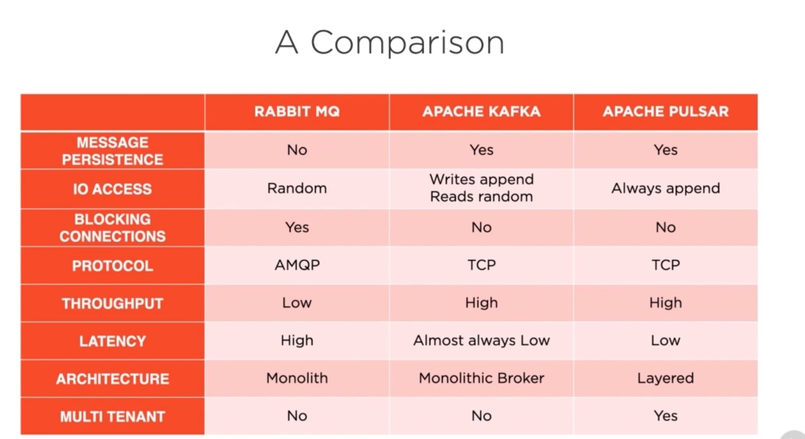

RabbitMQ
RabbitMQ smart-broker /dumb consumer modelini kullanır. Yani burada cursor’ın nerede kaldığını broker bilmek zorundadır. Broker mesajın iletilip iletilmediğini kendisine ulaşan bir acknowledge sayesinde takip eder. Böylece mesajın consumer’a iletimi garanti altına alınmış olur.
-
Dezavantajları : Consumer’ların online olduğunu var sayar ve acknowledge gelmediği sürece mesajın durumunu beklemede olarak işaretler.Yüksek hacimli mesajlaşma için uygun olmayabilir.
-
Avantajları : Genel amaçlı kullanım için uygundur. Farklı protokoller kullanmak istiyorsanız(AMQP 0–9–1, STOMP, MQTT, AMQP 1.0)

Apache Kafka
Kafka dumb-broker / smart consumer modelini kullanılır. Bunun anlamı; broker kendisinden bir mesaj talep edildiğinde o mesajı verir ancak mesajın iletilip iletilmediği ile ilgilenmez veya queue içerisinde cursor’ın nerede kaldığını bilmez. Cursor’ın nerede kaldığını consumer bilmek zorundadır. Genellikle büyük ölçekli mesajlaşma uygulamalarında veya streaming uygulamalarında kullanılır. Yüksek trafik ve düşük gecikme(High throughput and low latency) sağladığı için çok hızlıdır.
Kafka Topic
Genel olarak, bir topic belirli bir alana veya birbiriyle ilişkili olan nesnelerin tutulacağı alana verilen bir isimlendirmedir. Producer’den gönderilen mesajların tutulduğu veri deposudur. Veritabanındaki tablo’ya benzer diyebiliriz. Topic’ler farklı türde mesajlar da barındırabilir.
Partition — Offset
Bir topic içerisindeki alt parçalardır. Bu parçalara “partitions” denir. Topic altındaki partitions sayısınını yapıya göre belirlemek gerekir. Partition üzerinde Offsetler bulunmaktadır. Incremental Id diyebiliriz.Mesajlar bu offset değerlerine göre okunmaktadır.
Brokers
Topic’lerin çalıştığı sunuculara broker denir. Bir çok broker aynı anda çalışabilir. Bu da aslında Kafka Cluster(Master-Slave)’ını oluşturur. Her broker’ın kendisine ait bir Id’si (kimlik numarası) vardır. Genellikle kafka cluster’ları en az 3 broker’dan oluşur.Herhangi bir broker’a bağlandığınızda (bağlandığınız broker, bootstrap broker ismini alır)aslında tüm cluster’a bağlanmış olursunuz.Partion lideri olan bir broker var. Producer ve Consumer partion lideri olan broker gönderiliyor.Mesaj okunacaksada partion lideri olan brokerdan okunuyor.
Producer
Topic’lere mesajları gönderen uygulamalardır. Mesaj birimleri burada oluşur.
- ACK : 0 -> “Fire and forget” yaklaşımında Producer herhangi bir yanıt beklemez yani onay (acknowledgment) almaz. Mesaj broker’a gönderildiğinde başarılı olarak alınıp alınmadığı umursanmaz. Herhangi bir yanıt beklenmediğinden oldukça hızlı çalışır. Not:Burada verinin kabolma riski vardır
- ACK : 1->“Synchronous send” yaklaşımında ise mesaj gönderildikten sonra, yanıt gelene kadar beklenir fakat bu yaklaşımın en büyük dezavantajı, yavaş çalışabilir olmasıdır çünkü yanıt gelene kadar beklenir.
- ACK : 2->“Asynchronous send” yaklaşımı için, diğer iki yaklaşımın ortası diyebiliriz. “Asynchronous send” de olduğu gibi, yanıt beklemez fakat “call-back” hizmeti vardır.Producer mesajı gönderirken, parametre olarak “CallBack” interface’inden türetilen bir sınıfı verirseniz, bu sınıfın ilişkisel metoduna kafka’dan yanıt geldiğinde geri çağrım yapılacaktır.
Consumer
Consumer, topic’e yazılan veriyi okur. Okuma işlemini yaparken de partition içerisindeki offset sırasına-kuralına göre yapar.
Zookeeper
- Broker’ları yönetir.
- Hangi partition’ın lider olacağına karar verir. Örneğin bir partition işlevini yitirdiğinde, bir başka partition’ın lider olması gerekir.
- Zookeeper, herhangi bir değişiklik olduğunda kafkaya bildirim gönderir, bilgilendirir. Örneğin bir topic oluşturulduğunda ya da bir broker çöktüğünde ya da bir topic silindiğinde.
- Zookeeper birden fazla instance olarak çalışabilir fakat yine birisinin lider olması gerekir.
Yardımcı Linkler

- https://www.rabbitmq.com/documentation.html
- https://kafka.apache.org/documentation/
- https://pulsar.apache.org/docs/2.11.x/